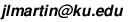

Monday 8/25
Organizational meeting
Monday 9/1
No seminar (Labor Day)
Monday 9/8
Jeremy Martin
The Tutte polynomial
Abstract: The Tutte polynomial ties together many graph isomorphism invariants, including the number of spanning trees, the number of acyclic orientations, the number of strong orientations, and the chromatic polynomial. These invariants count very different-looking structures, but what they have in common is a deletion/contraction recurrence. The Tutte polynomial is defined by a "universal" deletion/contraction recurrence, general enough that it can specialize to all these invariants and many others. It has other great properties, including an explicit closed formula and surprising behavior with respect to planar duality. I'll give an overview of the Tutte polynomial, assuming little or no background on graph theory. (In fact, the Tutte polynomial is well-defined for matroids, not just graphs, but that's another talk!)
Monday 9/15
Han Yin
A Non-Iterative Straightening Method and Orthonormality of Skew Schur Modules
Abstract: Skew semistandard tableaux index basis elements for skew Schur modules, as well as for the irreducible representations of both the symmetric group and the general linear group. These constructions typically rely on the iterative straightening process. Hodges introduced a recursively defined basis for Schur modules that enables straightening to be computed non-iteratively. Extending this approach to skew shapes, we construct an analogous basis and interpret it via a Gram–Schmidt process, showing that the defining coefficients arise from an inner product.
Monday 9/22
Marge Bayer
Independence complexes of certain graphs
Abstract: The independence complex of a graph is the simplicial complex on the vertex set of the graph with faces corresponding to vertex sets that are independent in the graph (have no edges among them). There are many papers about the topology of the independence complexes of specific classes of graphs. This talk will be about the independence complexes of planar graphs that are "ternary," that is, that have no cycles with length a multiple of 3. With my coauthors from GRWC (Danner, Holleben, Kramer and Yang) we showed that these are actually boundaries of simplicial polytopes, and we found that their h-polynomials are products of Delannoy polynomials.
Monday 9/29
Andrés Molina
Matroids over Hyperfields and their Tropical Analogues
Abstract: Hyperfields are algebraic structures akin to fields, where the usual sum operation is changed by a multivalued hypersum. Baker-Bowler theory of matroids over hyperfields use these structures to see several kind of matroidal-like objects under the same framework. We present some relevant examples of these: matroids, oriented matroids and valuated matroids, motivating them with their combinatoric features. After that we present some well known tropical objects corresponding to these: tropical linear fans, real matroid fans and tropical linear spaces. Finally, we introduce the less-known case of oriented-valuated matroids, its tropical analogue, real tropical linear spaces, and explain how the correspondence obtained thereof generalizes the previous ones.
Monday 10/6
Alex Woo (University of Idaho)
Generalizations of Schubert varieties defined by inclusions
Abstract: Gasharov and Reiner defined the notion of Schubert varieties defined by inclusions (a combinatorial generalization of smoothness) for type A, and the same permutations showed up in several different contexts. I will discuss a generalization to other types due to Hultman and how it works out concretely in type B, as well as a relative version for pairs of permutations due to Lapid and a conjecture as to how Lapid's definition can be given a geometric context.
Monday 10/13
No seminar (Fall Break)
Monday 10/20
Chris Uchizono
Cluster-Like Algebras from Triangulations of Non-Orientable Surfaces
Abstract: In 2006, Fomin, Shapiro, and Thurston studied various properties of cluster algebras that arise from triangulations of orientable bordered surfaces with marked points. In this talk, we will give an expository introduction to quasi-cluster algebras, defined by Dupont and Palesi in 2011, which generalize the surface-type cluster algebras by removing the assumption of orientability of the surface being triangulated. If time permits, we will present various recent developments of quasi-cluster algebras such as partitioned quivers and quasi-cluster complexes.
Monday 10/27
Reuven Hodges
The probability of comparability in the (weak) Bruhat order
Abstract: What is the probability that two uniformly random permutations \(\pi,\sigma\in S_n\) are comparable in the weak order? We give a constructive lower bound by explicitly generating a large disjoint family of comparable pairs via a divide-and-conquer scheme. Let \(f(n)\) be the number of comparable pairs in \(S_n\times S_n\) and set \(p_n:=f(n)/(n!)^2\). An entropy-based analysis of the coupled recurrences arising from the construction shows \(\log_2 f(n)\ge (\log_2 3-\tfrac{1}{3}) n\log_2 n\), hence \(p_n \geq \exp(-0.738(1-o(1)) n \ln n)\).
Monday 11/3
Jeremy Martin
Chromatic symmetric functions of trees: an overview
Abstract: I will review what is known about Stanley's notorious open question on whether two non-isomorphic trees can have the same chromatic symmetric function, with the intention of preparing the audience for Michael Tang's talk next week. I assume no background knowledge of the problem (or even with symmetric functions).
Monday 11/10
Michael Tang (University of Washington)
Generalized degree polynomials and the chromatic symmetric function
Abstract: A long-standing question of Stanley asks whether non-isomorphic trees can have the same chromatic symmetric function (CSF). To attack this question, we analyze the generalized degree polynomial (GDP), a graph invariant introduced by Crew that enumerates subsets of vertices by size and number of internal and boundary edges. Aliste-Prieto et al. showed that for trees, the GDP is linearly determined by the CSF, making it a useful intermediary to study Stanley's question. We present several new classes of data about a tree that can be recovered from the GDP, such as the double-degree sequence, which enumerates pairs of adjacent vertices by degree, and the leaf adjacency sequence, which enumerates vertices by degree and number of adjacent leaves. Then, by considering a variant of the GDP for polarized trees -- trees with distinguished "left" and "right" vertices -- we prove a recurrence relation for the GDP, and present methods to construct arbitrarily large sets of trees with the same GDP.
Monday 11/17
Marge Bayer
Ehrhart theory of polytopes
Abstract: The Ehrhart polynomial and Ehrhart series count the number of integer points in dilations of a polytope with integer vertices. Ehrhart-Macdonald reciprocity makes the connection between the number of integer points in the solid polytope and the number of integer points in the interior of the polytope. When the polytope has a unimodular triangulation, the h-vector of the triangulation can be obtained from the Ehrhart series, and vice versa. The Ehrhart polynomial can be used to count other objects when there is an associated integer polytope. For example, the number of order-preserving maps from a poset to chains is encoded in the Ehrhart polynomial of the order polytope.
Monday 11/24
Jeremy Martin
Interval and unit-interval parking functions
Abstract:
An interval parking function (IPF) is a variation of an ordinary
parking function in which the \(i\)th car is only willing to park in a
particular interval \([a_i,b_i]\) of parking spaces. Marge Bayer gets the
credit for proposing the idea (at this very seminar in Spring 2019) Of
particular interest is the case that \(b_i-a_i\le1\) for every \(i\). Thse
unit-interval parking functions have been studied by Kimberly
Hadaway and Pamela Harris, among others.
I will discuss what I think is the first paper on IPFs, by Emma Colaric (MA, KU, 2020), Ryan DeMuse, Mei Yin and myself. In short, counting IPFs turns out to be not so exciting, but they have some surprising structural properties related to Bruhat orer on permutations. On the other hand, UPFs are rich both enumeratively and structurally. I will give an overview of what is known, focusing on a recent paper of Kyle Celano, Jennifer Elder, Kimberly Hadaway, Pamela Harris, Amanda Priestley, Gabe Udell, and myself.
Monday 12/1
Kimberly Hadaway (Iowa State U.)
Road Trip through Research
Abstract:
Parking functions correspond with preferences of \(n\) cars which enter
sequentially to park on a one-way street where (1) each car parks in the
first available spot greater than or equal to its preference and (2) all
cars successfully park. We generalize parking functions to parking
completions: Here, we are given that some cars have already parked in a
set of spots, which are indexed in a vector \(t\). We then consider a
preference vector \(c\), where
\(\operatorname{len}(t)+\operatorname{len}(c)=n\). If all cars can park,
we say that \(c\) is a parking completion. Adeniran et al. (2020) state an
open problem which connects the number of parking completions to the
volumes of Pitman-Stanley polytopes by explicit computation on small
values of \(n\). In this talk, we provide a partial solution to this open
problem by exploring edge cases. We also share some ways to get involved
with research in small groups in the larger mathematical community
(including free trips, collaboration funding, and mentoring
opportunities).
For seminars from previous semesters, please see the KU Combinatorics Group page.
